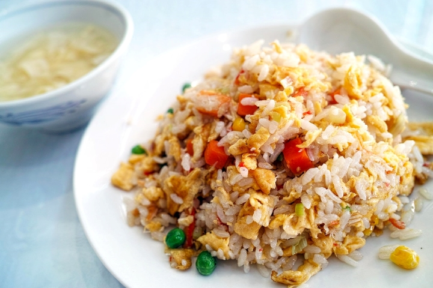

Fried Rice

Perfect staple food that can be eaten every day
Ingredients
- Cooked chilled Rice
- Eggs
- Carrots
- Garlic
- Soy Sauce
- Oyster Sauce
- Toasted Sesame Oil
- Butter
Recipe Instructions
- Scramble eggs: Using a small pat of butter, scramble some eggs in a large sauté pan,
breaking them into small pieces as you go. Then transfer the eggs to a separate plate, and set aside.
- Sauté veggies and garlic: your sauté pan to the heat, and sauté the onions, carrots, peas
and garlic until soft and cooked through.
- Stir fry rice: Then turn the burner to high heat. Scooch the veggies over to one side of
the pan, melt the remaining butter in the other half, and add the chilled rice, soy sauce, and oyster sauce
(if using). Then stir to combine with the veggies and continue sautéing the rice, stirring every 15-20
seconds or so for 3 minutes, or until you notice the rice and veggies starting to brown slightly.
- Remove pan from heat. And stir in your green onions, sesame oil, and scrambled eggs.
- Taste and season. Give the rice a taste, and season with salt and pepper, plus any extra
soy sauce or sesame oil if needed.
- Serve! Then dish it up and serve nice and warm!